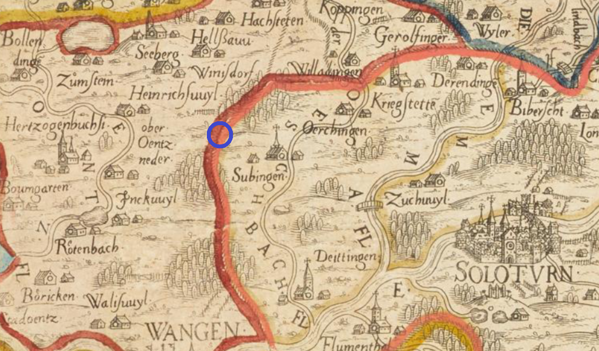

Darstellungen von Etziken im Lauf der Zeit (1): Die Karte (Ausschnitt) vom Stadtarzt von Bern, Thomas Schöpf (1520-1577), gedruckt im Jahr 1578, wird als qualitativ hochstehend und detailreich bewertet. Nur: Etziken wird nicht durch die Bezeichnung einer Ortschaft dargestellt, wir suchen den Namen unseres Dorfes vergebens. Der Autor hat den ungefähren Standort von Etziken mit einem blauen Kreis markiert. Vielleicht ist dieses Unterlassen bewusst vorgenommen worden: Genau über Etziken zieht sich die damalige Grenze der Territorien von Bern (links) und Solothurn (rechts). Damals waren zudem die entsprechenden Herrschaftsverhältnisse, z.B. in der Gerichtsbarkeit, in Etziken noch zwischen Solothurn und Bern geteilt, und so wusste man damals nicht, wie dieser Zustand dargestellt werden sollte.